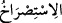
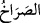
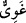
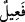
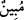

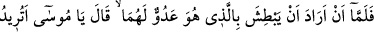
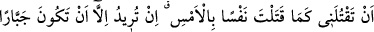
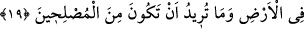
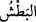
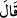
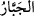
Mûsâ (a.s.) ansızın baktı ki, dün öldürülen kıptîyi def edip savmak için kendisinden
yardım isteyen İsrâilli, âvâzı çıktığı kadar bağırıyor ve Mûsâ’dan yine yardım istiyor.
“__WORD__, bağırarak imdât taleb etmek, yardım istemek demektir. “__WORD__ ise çığlık,
şiddetli ses ve yardım istemek mânâlarına gelir (Kâmûs).
“Mûsâ ona” yâni dün Firavun âilesine mensup başka bir kişiye karşı kendisinden
“yardım isteyen” İsrâilliye “dedi ki: Doğrusu sen, besbelli” sapıklık ve zulmü âşikâr
“bir azgınsın!” Çünkü bir adamın ölümüne sebep oldun ve şimdi de başka biriyle
dövüşüyorsun. Yani ben, dün düştüğüm hatâya senin sebebinle düştüm. Şimdi de tekrar
beni başka bir günaha düşürmeğe çalışıyorsun.
”” kelimesi; “__WORD__ vezninde olup “sapan, azgın” mânâsına gelir. “__WORD__ ise sapıklık
ve azgınlığı apaçık demektir.
19. Mûsâ, ikisinin de düşmanı olan adamı yakalamak isteyince, o adam dedi ki:
Ey Mûsâ! Dün bir cana kıydığın gibi, bana da mı kıymak istiyorsun? Demek, ıslah
edicilerden (düzelticilerden) olmak istemiyor da, bu yerde ille yaman bir zorba
olmayı arzuluyorsun sen!
“Mûsâ, ikisinin de düşmanı olan adamı yakalamak isteyince,”
“__WORD__ kelimesi, birşeyi şiddetle tutup yakalamak ve üzerine çullanmak anlamına
gelir. Mûsâ (a.s.), hem kendisinin ve hem de yardım isteyen İsrâilli’nin düşmanı olan
kıptînin -ki kıptîler genel olarak İsraillilerin düşmanıdır- elini kuvvetle tutunca yâni onu
yakalamak isteyince… “O adam” yâni İsrailli Mûsâ’nın: “Belli ki sen, apaçık bir
azgınsın” diye hitâb etmesinden dolayı kendisine kızdığını düşünüp yakalayacağını
zannederek “dedi ki:”
Yahud da “__WORD__ (dedi)” fiilinin zamiri İsrailli değil de Kıptî’dir; yâni “Kıptî dedi ki:”
demektir. Bu durumda âyet şu şekilde yorumlanır: Sanki Kıptî, Mûsâ ile İsrâilli’nin
yukarıdaki konuşmalarından dün katledilen kıptînin bu İsrâilli için öldürülmüş olduğunu
düşünmüş ve bu gâlib zannına binaen demiştir ki:
“Ey Mûsâ! Dün bir cana kıydığın gibi, bana da mı kıymak istiyorsun? Demek”
güzel söz ve fiil ile insanların arasını bularak ıslah eden ve düşmanlıkları ortadan
kaldırmağa çalışan “ıslah edicilerden (düzelticilerden) olmak istemiyor da, bu yerde
ille yaman bir zorba olmayı arzuluyorsun sen!”
“__WORD__, işlerin sonunu düşünmeden istediğini yapan, insanlara vuran, öldüren ve